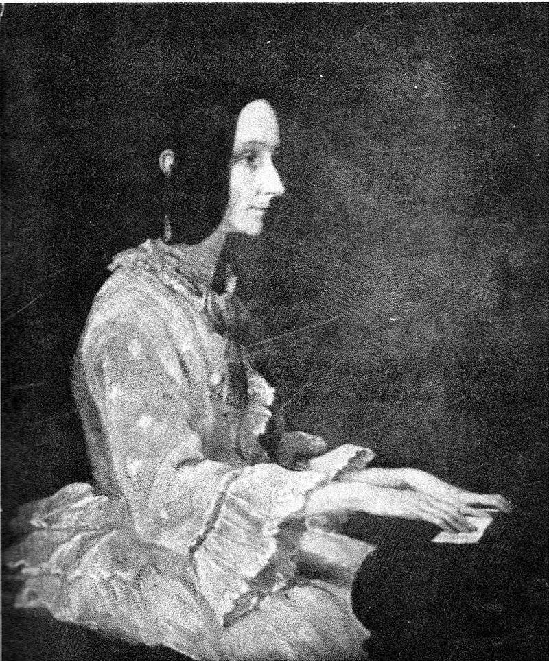

Augusta Ada King, Condessa de Lovelace, nasceu a 10 de dezembro de 1815, mas apenas um mês após o seu nascimento, devido a desentendimentos conjugais, a sua mãe abandonou a casa da família enquanto Lord Byron dormia, levando consigo a filha recém-nascida. Mais tarde, pediu o divórcio de Byron, aparentemente depois de saber que a meia-irmã do marido, Augusta Leigh (que deu o nome à criança), era também sua amante. Três meses depois, o próprio Byron teve de deixar Inglaterra, fugindo de credores e de numerosos escândalos. Ada nunca mais voltou a ver o pai, pois a mãe assegurou a sua custódia ameaçando Byron de que divulgaria os seus casos extraconjugais.

Ada fue una niña enfermiza y a los siete años contrajo una enfermedad que la tuvo postrada en cama durante varios meses. A los catorce, sus piernas quedaron paralizadas de forma temporal como consecuencia de un grave sarampión, lo que hizo que la joven dedicara mucho tiempo al estudio y a la lectura. Su madre se esforzó en darle una esmerada y estricta educación, que incluía música, francés y matemáticas. Asimismo, quiso que su hija tuviera una formación científica, y para ello contrató a la prestigiosa matemática y astrónoma escocesa Mary Somerville. Para estimular aún más el interés de Ada por la ciencia y la tecnología, madre e hija viajaron por las regiones más industrializadas de Inglaterra, donde la muchacha pudo admirar las máquinas más novedosas como el "telar de Jacquard", un telar mecánico inventado por Joseph Marie Jacquard y que ya en aquella época utilizaba tarjetas perforadas para funcionar. Su elevado estatus social le permitió relacionarse con prestigiosos científicos como Andrew Crosse, David Brewster, Charles Wheatstone, Michael Faraday y con el novelista Charles Dickens.
LOS PRIMEROS PASOS HACÍA LA PROGRAMACIÓN
Quando fez 18 anos, e como qualquer outra jovem aristocrata do seu tempo, Ada começou a frequentar festas da alta sociedade, e numa delas, organizada pela sua tutora Mary Somerville, conheceu o matemático Charles Babbage, que tinha concebido uma calculadora mecânica capaz de calcular tabelas de funções numéricas pelo método das diferenças. Também concebeu, mas nunca construiu, uma máquina analítica para executar programas de tabulação ou computacionais. Por estas invenções, Babbage é considerado um dos pioneiros na conceção da ideia do que hoje poderíamos considerar um computador. A invenção de Babbage entusiasmou Ada e, mais importante ainda, ela pensou que mostrava que, um dia, as máquinas iriam permitir mudar a vida das pessoas.
UNA MUERTE PREMATURA
Apesar de Babbage ter tentado convencer o governo britânico a financiar a construção da sua máquina e a dar um salto tecnológico que, sem dúvida, teria mudado o século XIX, o matemático morreu na pobreza depois de esbanjar a sua fortuna. Após a rejeição profissional de Babbage, Ada Lovelace nunca mais trabalhou e, atormentada pela doença e pela dependência de opiáceos, refugiou-se no jogo e nos braços de numerosos amantes, o que lhe custou grande parte da sua fortuna e do seu casamento. Ada morreu a 27 de novembro de 1852, na sequência de uma sangria efectuada pelos médicos da época, numa tentativa de curar o seu cancro do útero. Tinha 36 anos, a mesma idade de Byron quando morreu, e o seu último desejo foi ser enterrada ao lado do pai que nunca conheceu.
